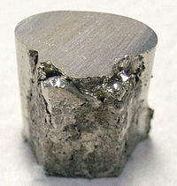

Numero atomico: 28
Massa atomica: 58,69
Temperatura di fusione (°C): 1455
Temperatura di ebolizione (°C): 2913
Energia di prima ionizzazione (kj/mol): 737
Elettronegatività (secondo Pauling): 1,91
Densità: 8,90
Numeri di ossidazione: +2+3
Configurazione elettronica: 1s2, 2s2, 2p6, 3s2, 3p6, 3d8, 4s2
Maggiori Informazioni